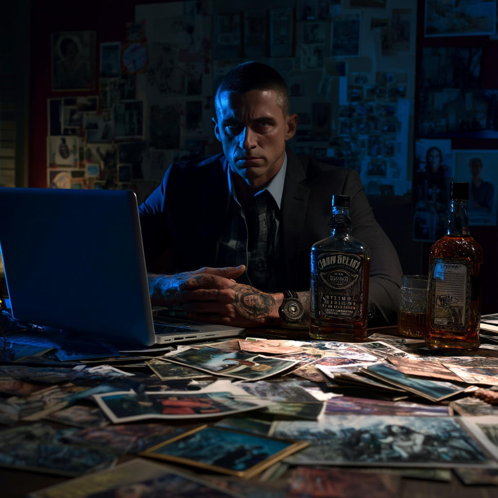

VOLKOV BOARD
Obsessionens Manifestation
Korkskiva 120x180cm dominerar Mac's vardagsrum. Foton, kartor, snören och anteckningar mappar Dmitri Volkov's aktiviteter. Mac's sista ankare till verkligheten... eller hans väg in i galenskap.

JAG ÄR INTE GAL
- Post-it mitt på boarden, täcker familjeporträtt från 2019
OBSESSIONENS KÄRNA
DMITRI VOLKOV
Suddig övervakningsbild från Köpcentret (dec 2024)
Enda tydliga bild Mac har
VEM?
VARFÖR?
JOBBAR FÖR VEM?
VARFÖR?
JOBBAR FÖR VEM?
"VAR ÄR HAN?"
- Skrivet 47 gånger på boarden
- Skrivet 47 gånger på boarden
TIDSLINJE
VOLKOV'S SPÅR
2019
Stanford University
Restricted Lab Access, April 2019
Restricted Lab Access, April 2019
"Vad gjorde han där? Fysik? Materiallära?"
2019
Iowa State University
Visiting Researcher, Engineering Dept
Visiting Researcher, Engineering Dept
"Samma år som Stanford. Varför båda?"
2024
Mall Before Christmas
December 23 - Volkov identifierad, mahognylåda
December 23 - Volkov identifierad, mahognylåda
"Han visste vad som skulle hända. Han VAR där."
2025
Sea Glass
Maj - Kristallteknologi utan Volkov
Maj - Kristallteknologi utan Volkov
"Volkov var INTE där - men teknologin var"
Timeline = 6 år. Planerat? Experiment?
GEOGRAFISK KARTLÄGGNING
USA-KARTA MED NÅLAR
🔴 STANFORD, CA
Restricted lab - fysikavdelning
"Vad testades?"
"Vad testades?"
🔴 IOWA CITY, IA
Engineering dept - materialforskning?
"Koppling till Stanford-besöket"
"Koppling till Stanford-besöket"
⚫ WASHINGTON DC
Mall incident - Volkov identifierad
"Mahognylåda funnen"
"Mahognylåda funnen"
⚫ ROCKPORT, ME
Fyr - kristallteknologi
"Volkov INTE där - men samma teknik"
"Volkov INTE där - men samma teknik"
MÖNSTER:
2019: Universitet (research)
2024-2025: Aktiv fas (incidents)
Vad SÖKER han?
Vad BYGGER han?
Var härnäst?
2019: Universitet (research)
2024-2025: Aktiv fas (incidents)
Vad SÖKER han?
Vad BYGGER han?
Var härnäst?
KRISTALLTEKNOLOGI
TEKNOLOGISK ANALYS
"Mac förstår inte teknologin. Detta är den mest kaotiska sektionen."
MALL-INCIDENT
- • Mahognylåda med sniderier
- • Röd kristallkub ~5cm³
- • Pulserade
- • "Inte bara dekoration - funktionell?"
SEA GLASS
- • Kristallformationer i fyren
- • Olika färger (röd, blå, grön)
- • "Samma geometri som kuben?"
- • Beacon-teknologi
SAMMA TEKNOLOGI = SAMMA KÄLLA = VOLKOV
TEORIER & POST-IT LAPPAR
Spridda Post-Its på Boarden
Kolla Iowa State arkiv - mer info?
VAR ÄR VOLKOV NU???
Finns Volkov i Stanford databas?
Volkov = agent, inte mastermind?
Nästa incident - VAR? NÄR?
Verifiera Stanford loggar
Flera Volkovs? Kloner? (NEJ, galet)
Fråga Frank om kristall-analys (försiktigt)
Var fick han teknologin?
Teknologi från WWII-eran? Reverse-engineered?
DARK WEB RESEARCH
-
Nazi crystal technology
Referenser till "Project Ahnenerbe" -
Die Glocke-experiment
Nazistiskt "klockexperiment" - koppling? -
Piezoelektriska material
Akademiska artiklar från JSTOR (Mac förstår ~30%) -
Kvantmekaniska resonansfenomen
"Kraftkälla? Kommunikationsenhet? Vapen?"
MAC'S SLUTSATS:
"2019: Volkov börjar (Stanford/Iowa)
2024-2025: Incidents eskalerar
Samma projekt? Hur länge har det pågått?
VEM DRIVER PROJEKTET OM INTE VOLKOV?"
"2019: Volkov börjar (Stanford/Iowa)
2024-2025: Incidents eskalerar
Samma projekt? Hur länge har det pågått?
VEM DRIVER PROJEKTET OM INTE VOLKOV?"
"MÖNSTREN ÄR VERKLIGA.
DET GÖR HONOM BARA MER GAL."
DET GÖR HONOM BARA MER GAL."